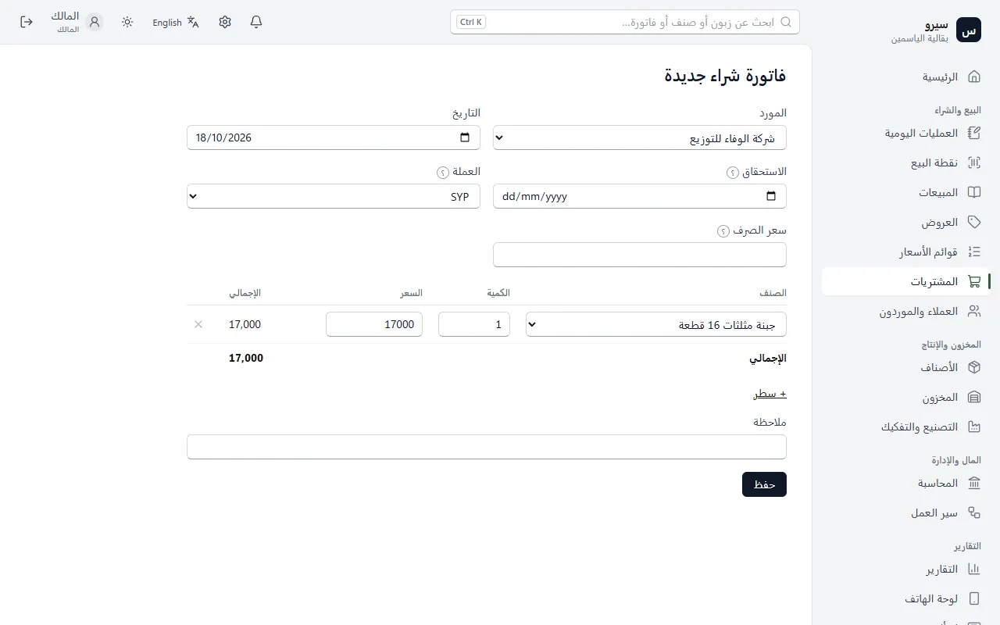

الشراء والموردون
فاتورة الشراء تُدخل البضاعة إلى المخزون وتحسب تكلفتها، وتسجّل ما عليك للمورد.
فاتورة شراء
- من المشتريات اختر فاتورة شراء جديدة.
- اختر المورد، ثم الأصناف والكميات وأسعار الشراء.
- اضغط حفظ. تدخل البضاعة إلى المخزون، وتُحسب تكلفة كل صنف من أسعار الشراء وحدها.

- صنف له تاريخ انتهاء: اكتب تحت سطره رقم الدفعة وتاريخ انتهائها.
غلط في فاتورة شراء؟ عدّلها كفاتورة البيع.
طلب شراء واستلامه
طلب الشراء لا يغيّر المخزون ولا الحسابات: يُحسب قادماً حتى تصل البضاعة.
- يُنشأ من إعادة الطلب أو من مفاضلة الموردين أو من المشتريات.
- حين تصل البضاعة حوّل الطلب إلى فاتورة شراء (على الجوال: طلبات الشراء ← الطلب ← استلام البضاعة). تدخل البضاعة ويصير المبلغ على المورد.
- للأصناف ذات الدفعات اكتب رقم الدفعة وتاريخ الانتهاء عند الاستلام.
- طلب لن يصل؟ إلغاء الطلب.
- على الجوال: عروض وطلبات أو طلبات الشراء من مجموعة البيع لطلب جديد أو لمشاركته مع المورد، واستلام البضاعة من مجموعة المخزون والإنتاج حين تصل.
مفاضلة الموردين
- سجّل أسعار كل مورد بعملته: من صفحة المورد على الكمبيوتر، أو مفاضلة الموردين ← أسعار الموردين على الجوال.
- اكتب الكميات (المقترحة من حد إعادة الطلب)، وأقل عدد بنود للمورد، وأقصى زيادة في السعر عند نقل بنود مورد مستبعد.
- اضغط قارن الأسعار. يوزّع البرنامج البنود على أرخص الموردين بعد تحويل الأسعار إلى الليرة.
- ما لا يمكن حلّه يُعرض عليك: اقبل المورد ببنود أقل، أو انقل بنوده رغم فرق السعر.
- إنشاء أوامر الشراء: طلب شراء لكل مورد بعملته، تستلمه من طلبات الشراء.
الشراء بالدولار
- في فاتورة الشراء اختر العملة.
- اكتب سعر الصرف، أو اتركه فارغاً ليُستعمل آخر سعر مسجّل.
- يبقى ما عليك للمورد بالدولار، والقيود بالليرة بسعر يوم الفاتورة. فرق السعر عند الدفع يُقيَّد وحده.
دفع لمورد
- افتح المورد من العملاء والموردون.
- في دفع للمورد اكتب المبلغ واضغط تسجيل. تُسدَّد فواتيره الأقدم أولاً.
مصروف
من العمليات اليومية اختر اشتريت ثم مصروفاً، واكتب المبلغ. يدخل في الأرباح والخسائر مصروفاً.